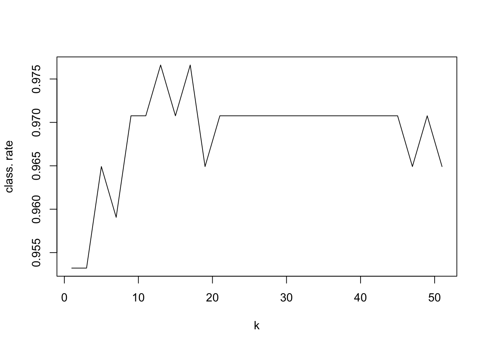

# install "mlbench" package
library(mlbench)
# Look at the Breast Cancer data
# more about data is here: https://archive.ics.uci.edu/ml/datasets/Breast+Cancer+Wisconsin+(Original)
data(BreastCancer)
dim(BreastCancer)
## [1] 699 11
levels(BreastCancer$Class)
## [1] "benign" "malignant"
head(BreastCancer)
## Id Cl.thickness Cell.size Cell.shape Marg.adhesion Epith.c.size
## 1 1000025 5 1 1 1 2
## 2 1002945 5 4 4 5 7
## 3 1015425 3 1 1 1 2
## 4 1016277 6 8 8 1 3
## 5 1017023 4 1 1 3 2
## 6 1017122 8 10 10 8 7
## Bare.nuclei Bl.cromatin Normal.nucleoli Mitoses Class
## 1 1 3 1 1 benign
## 2 10 3 2 1 benign
## 3 2 3 1 1 benign
## 4 4 3 7 1 benign
## 5 1 3 1 1 benign
## 6 10 9 7 1 malignantExercises
Exercise 1 (Breast Cancer classifier) Given BreastCancer data shown below build the best KNN classification model that you can to predict the cancer type (benign or malignant).
Note: you may need to do some data cleaning.
- First column contains patients IDs that should not be used
- Data set contains some missing values. You can keep only the complete cases e.g. using na.omit() function.
Exercise 2 (Training regression model) Let’s look again at the “fat” data set from the “faraway” package. This time we would like to use regression to predict the Brozek scores given new observations as accurately as possible.
Split data into train (60%), validation (20%) and test (20%). Assess three models on the validation set using RMSE. Which model seems to be the best in terms of predicting the Brozek scores. What would be the expected performance on the new (test) data?
- Model 1: use “age” only as predictor
- Model 2: use “age”, “weight” and “heigth” as predictors
- Model 3: use “age”, and “wrist” as predictors
Answers to selected exercises
Solution. Exercise 1
Code
library(splitTools)
library(class)
# set random seed to be able to repeat analysis
randseed <- 123
set.seed(randseed)
# clean data by removing first column of IDs
data.cancer <- BreastCancer[, -1]
# keep only complete cases
data.cancer <- na.omit(data.cancer)
# split data into train, validation and test
inds <- partition(data.cancer$Class,
p = c(train = 0.5, valid = 0.25, test = 0.25),
seed = randseed)
# preview lists with splits
str(inds)
## List of 3
## $ train: int [1:341] 2 3 4 8 13 17 18 20 21 24 ...
## $ valid: int [1:171] 7 9 10 11 22 23 25 30 35 49 ...
## $ test : int [1:171] 1 5 6 12 14 15 16 19 26 27 ...
# make train, validation and test sets
data.train <- data.cancer[inds$train, ]
data.valid <- data.cancer[inds$valid,]
data.test <- data.cancer[inds$test, ]
# check their dimensions
dim(data.train)
## [1] 341 10
dim(data.valid)
## [1] 171 10
dim(data.test)
## [1] 171 10
# and print our group summaries
summary(data.train$Class)
## benign malignant
## 222 119
summary(data.valid$Class)
## benign malignant
## 111 60
summary(data.test$Class)
## benign malignant
## 111 60
# find optimal value of k
k.values <- seq(1, 51, 2)
class.rate <- rep(0, length(k.values))
for (k in seq_along(k.values))
{
pred.class <- knn(train = data.train[, -10],
test = data.valid[, -10],
cl = data.train[,10], k=k.values[k])
class.rate[k] <- sum((pred.class==data.valid[,10]))/length(pred.class)
}
# for which value of k we reach the highest classification rate
k.best <- k.values[which.max(class.rate)]
print(k.best)
## [1] 13
# plot classification rate as a function of k
plot(k.values, class.rate, type="l", xlab="k", ylab="class. rate")
Code
# how would our model perform on the future data using the optimal k?
pred.class <- knn(train = data.train[, -10], data.test[, -10], data.train[,10], k=k.best)
class.rate <- sum((pred.class==data.test[,10]))/length(pred.class)
print(class.rate)
## [1] 0.9707602Other solutions could include:
- trying and comparing models with different number of variables
- trying to implement k-fold cross validation or LOOVC to assess model performance when selecting the optimal value of \(k\)
Solution. Exercise 2
library(tidyverse)
library(splitTools)
# access data
# data(fat, package = "faraway")
# data.fat <- fat
data.fat <- read_csv("data/brozek.csv")
# split into train, validation and test: stratify by Brozek score
inds <- partition(data.fat$brozek,
p = c(train = 0.6, valid = 0.2, test = 0.2),
seed = randseed)
str(inds)
## List of 3
## $ train: int [1:145] 1 2 4 5 6 7 11 12 13 15 ...
## $ valid: int [1:54] 3 8 9 10 14 18 22 27 29 34 ...
## $ test : int [1:53] 16 37 38 40 42 43 48 49 54 62 ...
data.train <- data.fat[inds$train, ]
data.valid <- data.fat[inds$valid,]
data.test <- data.fat[inds$test, ]
# Model 1
m1 <- lm(brozek ~ age, data = data.train) # fit model on train
m1.pred <- predict(m1, newdata = data.valid[,-1]) # predict brozek score using validation set
m1.rmse <- sqrt((1/nrow(data.valid))*sum((data.valid$brozek - m1.pred)^2)) # calculate RMSE
# Model 2
m2 <- lm(brozek ~ age + weight + height, data = data.train) # fit model on train
m2.pred <- predict(m2, newdata = data.valid[,-1]) # predict brozek score using validation set
m2.rmse <- sqrt((1/nrow(data.valid))*sum((data.valid$brozek - m2.pred)^2)) # calculate RMSE
# Model 3
m3 <- lm(brozek ~ age + wrist, data = data.train) # fit model on train
m3.pred <- predict(m3, newdata = data.valid[,-1]) # predict brozek score using validation set
m3.rmse <- sqrt((1/nrow(data.valid))*sum((data.valid$brozek - m3.pred)^2)) # calculate RMSE
# Compare models
rmse <- data.frame(model = c("Model 1", "Model 2", "Model 3"), rmse = c(m1.rmse, m2.rmse, m3.rmse))
rmse
## model rmse
## 1 Model 1 6.970207
## 2 Model 2 6.281986
## 3 Model 3 6.543864
# Out of the three models, Model 2, has the smallest RMSE and is thus selected as best
# Expected performance on the test data
m.pred <- predict(m2, newdata = data.test[,-1])
sqrt((1/nrow(data.test))*sum((data.test$brozek - m.pred)^2))
## [1] 8.129801Note: It is possible to use glm() function to fit linear regression. The advantage of this is that one can use easily use cross validation with cv.glm(). More about that on Friday.